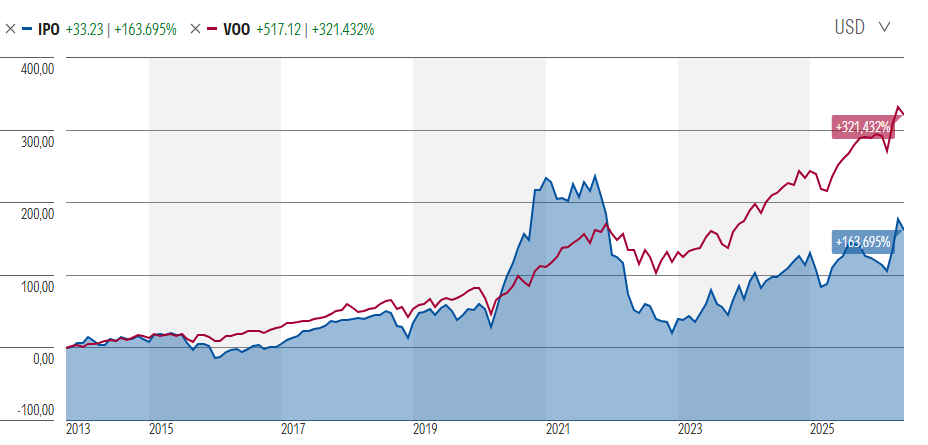

Space X puede ser el futuro y como he dicho, Elon Musk todo lo que ha sacado ha sido oro. Tesla, Paypal…¿se puede decir que es el Da Vinci de nuestra época?
Pero esto es como todo, el oro también tiene valor y lo seguirá teniendo. Pero a 4.500 € la onza no voy a comprar oro. Pues lo mismo con Space X, la van a sacar a 135 USD la acción, supone un PER cercano a 100, es decir, el precio es 100 veces el beneficio de hoy. La casa de análisis Morningstar la ha valorado en la mitad (te dejo abajo el link).
¿Entonces la gente que compra es tonta? No, porque espera (como indica Goldman Sachs) que sus beneficios suban tanto en el futuro que su PER podría andar entre 9 y 25. Lo que estarían haciendo ahora es comprar pronto y barato esperando una mayor subida en el futuro.
En su día dije que iba a comprar y lo que me está echando atrás es lo que estoy leyendo a medida que sale más información estos últimos días. Entre ellas la siguiente.
Estas acciones están en manos privadas, las van a sacar a bolsa para recoger dinero e invertir en proyectos espaciales y similares. Todo esto lo gestiona Fidelity que en principio dijo que las inversiones mínimas debían ser de 500.000 USD y ahora ha reducido de repente esa inversión a 2.000 USD ¿por qué? ¿parece ser que no hay mucha gente decidida a invertir 500.000 USD en esta “buena oportunidad”?
Hay una teoría que dice que para que las salidas a bolsa tengan éxito ponen las acciones baratas así la gente las compra y los vendedores se deshacen de las suyas. Todos contentos. De hecho con esto de las IPO (salidas a bolsa) hay un ETF que compra empresas que van a salir a bolsa, se llama “The Renaissance IPO ETF”. ¿y cómo le ha ido? Pues en este gráfico vemos en azul este ETF y en rojo nuestro queridísimo S&P500.

Todavía quedan unos día hasta la salida a bolsa y yo esperaría a recibir más información. Sin embargo, como dije, meter unos cientos en esta salida sin poner en riesgo todo tu capital no lo veo mala idea, tampoco es mala idea esperar hasta que se consolide la situación y pasen unos meses y veamos si tira el negocio o no. Yo me he decidido por esta última.
Si quieres invertir en el mundo de la IA y en la misma SpaceX sin apostarlo todo a una puedes investigar el ETF “The Destiny Tech 100”, que entre sus 36 compañías posee; Anthropic 18.1%, SpaceX 14.5%, OpenAI 5.8%, OpenEvidence 4.6%, Shield AI 4.2%, Databricks 2.5%, CHAOS Industries 2.1%, Hermeus 2.0%, Beast Industries 2.0%, Tenstorrent 1.7%, Revolut 1.6%, General Intuition 1.5%, Skild.ai 1.4%, Astranis 1.0%, Monzo 0.8% y muchas más. Así tendrás lo bueno de la diversificación.
Alonso Orellana, 10.06.2026.
Fuentes:
Goldman Sachs ve un aumento de 100 veces en los ingresos de SpaceX e IA para 2030
Morningstar: Por qué creemos que la IPO de SpaceX está sobrevalorada
← Volver a artículos